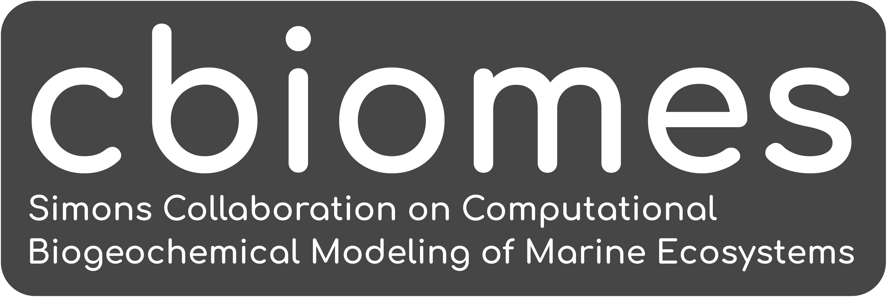
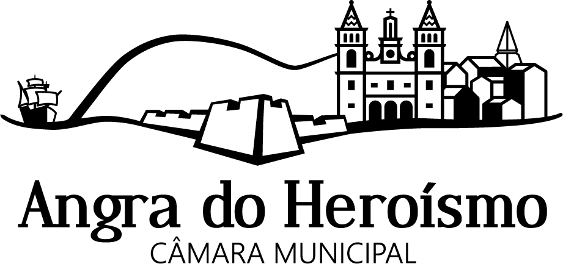

Context
The training workshop aims at developing the computer programming skills of those working on Earth Observation, including the members of the Earth Observation Laboratory (EO Lab) and other laboratories.
To stimulate collaboration beyond the training, the workshop is in person (full week). However, due to the high level of interest, remote participation is also possible.
The topics covered include acquisition, processing, visualisation, and classification of Earth Observation data, using the Julia programming language.
The training workshop will emphasize practical activities including the use of datasets, libraries/packages, automated workflows, Artificial Intelligence (AI), and classification algorithms. Theory-oriented sessions will introduce the concepts and hands-on activities.
Background
The open-source Julia language is relatively recent. It was created at the Massachusetts Institute of Technology (MIT), first released in 2012, and reached the v1.0 milestone in 2018. Julia has a vocation for high-performance scientific computing, making it today’s ideal choice to work on resource-intensive datasets such as the Earth Observation ones.
Mutual benefits expected to arise from the collaboration of the AIR Centre and the Julia community include:
- Capacity building for AIR Centre’s staff and other invited institutions.
- Create collaboration opportunities between the participants and speakers.
- Create the potential to extend the Portuguese contribution to the scientific community.
- Bringing together the two communities around Julia: developers and end-users.
- Opening new avenues for collaboration on both software and science.
- Contributing to strengthening the open source / science community.
- Creating an axis of collaboration to study the Azores region using Earth Observation, numerical models, and data products.
- Finding new prospective contributors to Julia packages; helping developers build up their user community; identifying needs and desired new features.
- Providing additional exposure for the products and activity of the AIR Centre; via US and EU growing Julia communities.
Program
The workshop will encompass different levels of expertise, from beginner to advanced, with a focus on Earth Observation concepts and programming skills. Our idea is to provide a single track of sessions in the morning and more detailed parallel sessions in the afternoon and to split people evenly on the double track part. There are three types of activities:
-
Plenary sessions (45’) - Cross-disciplinary training focused on theory and high-level concepts. These include the presentation of novel EO datasets i.e. satellite data, ocean models, and model products; processing & visualization techniques as well as available tools and packages. The first goal is to learn about new datasets and sources, libraries, packages, techniques, and implementation details. A secondary aim of this module is to identify gaps in the EO domain and opportunities to close those gaps using the Julia programming language.
-
Hands-on sessions (1h55’) - The modules will focus on concrete goals in data acquisition, processing & visualization techniques for example. They are designed to bridge between concepts and real-life application through extended tutorials. Attendees will get an introduction, through these tutorials, to performing common geospatial tasks using Julia geospatial tools and common geospatial libraries and packages.
-
General hackathons (1h) - Session that brings together Julia developers to enhance collaboration on EO applications and software development. The goal is to organize the last module of the day in the common room and enable everyone to work on intermediate & advanced level aspects according to their specific interests.
Day 1 – 09.01.2023
Timezone: UTC -1; GMT-1
9:00 – 9:15 Welcome speech and program presentation
9:15 – 10:00 Plenary session 1 The Power of JuliaGeo M. Visser
10:00 – 10:20 Coffee break
10:20 – 12:15 Hands-on session 1 Julia for beginners L. Kilpatrick
12:15 – 13:15 Lunch break
13:15 – 14:00 Plenary session 2 Raster data: Reading, Manipulating, and Visualising R. Schouten
14:00 – 15:55 Hands-on session 2.1 High-performance geostatistics in Julia J. Hoffimann
14:00 – 15:55 Hands-on session 2.2 Land Cover Classification of Earth Observation images (TBD) R. Schouten
15:55 – 16:15 Coffee break
16:15 – 17:15 General hackathon: Performing Land Cover/Land Use Classification
20:00 Networking event
Day 2 – 10.01.2023
Timezone: UTC -1; GMT-1
9:00 – 9:45 Plenary session 1 SAR data manipulation F. Cremer
9:45 – 10:05 Coffee break
10:05 – 12:00 Hands-on session 1 Makie.jl – Plots, Animations, & Graphics S. Danisch, L. Alonso
12:00 – 13:00 Lunch break
13:00 – 13:45 Plenary session 2.1 Visualising and Mapping Data (Vector & Raster) Within Spatial Reference Systems M. Visser
13:00 – 13:45 Plenary session 2.2 SARProcessing.jl – Possibilities and Challenges S. Lupemba
13:45 – 15:40 Hands-on session 2.1 Julia Use Case for Change Detection F. Cremer
13:45 – 15:40 Hands-on session 2.2 InSAR Coherence Estimation E. Lippert
15:40 – 16:00 Coffee break
16:00 – 17:00 General hackathon: Natural hazards monitoring (Building new features for SARProcessing.jl if possible)
19:30 Opening dinner
Day 3 – 11.01.2023
Timezone: UTC -1; GMT-1
9:00 – 9:45 Plenary session 1 MBON, seascapes, and the modeling of the Marine Ecosystem G. Forget
19:45 – 10:05 Coffee break
10:05 – 12:00 Hands-on session 1 : Regional Ocean Data 1. mapping gridded data onto MBON provinces 2. ocean time series collected near Azores G. Forget
12:00 – 13:00 Lunch break
13:00 – 14:00 General hackathon: Characterization of Marine Ecosystems from Space Using Artificial Intelligence
Day 4 – 12.01.2023
Timezone: UTC -1; GMT-1
9:00 – 9:45 Plenary session 1 Data science, big data, and cloud native solutions F. Gans (remote)
9:45 – 10:05 Coffee break
10:05 – 12:00 Hands-on session 1 Simulating oceanic pathways of plastics, pollutants, or marine ecosystems G. Forget
12:00 – 13:00 Lunch break
13:00 – 13:45 Plenary session 2.1 Julia showcases in Oceanography A. Barth
13:00 – 13:45 Plenary session 2.2 JuliaEarth applications J. Hoffimann
13:45 – 15:40 Hands-on session 2.1 Julia showcases in Oceanography A. Barth, G. Forget
13:45 – 15:40 Hands-on session 2.2 Estimation of water storage in medium and small reservoirs M. Pronk
15:40 – 16:00 Coffee break
16:00 – 17:00 General hackathon: AIR Centre Use Cases
Day 5 – 13.01.2023
Timezone: UTC -1; GMT-1
9:00 – 9:45 Plenary session 1 SARProcessing.jl – vision, state of affairs, and roadmap E. Lippert, S. Lupemba, I. Szczesniak
19:45 – 10:05 Coffee break
10:05 – 12:00 Hands-on session 1.1 Datacubes for high-resolution EO data F. Cremer (on-site), F. Gans (remote)
10:05 – 12:00 Hands-on session 1.2 Retrieving Bio-Geophysical parameters from space N. Wong, A. Barth
12:00 – 13:00 Lunch break
13:00 – 13:15 Workshop closure/farewell speech
Speakers
The following speakers have been selected from the Julia community to participate in this training event. The speakers involve a mix of seasoned and young/aspiring scientists. The selection was based on the level of skill and commitment demonstrated, with contributions to the EO software packages which are most needed for AIR Centre’s current work and future development.
Alexander Barth
Alexander Barth is a researcher working at the University of Liege (Belgium) in the GHER group (GeoHydrodynamics and Environment Research). He did a PhD on nested numerical ocean models and data assimilation. Currently he is working on variational analysis schemes for climatologies and neural networks to reconstruct missing data.
Eigil Yuichi Hyldgaard Lippert
I am currently pursuing a Ph.d. in Numerical Glaciology in which I am working with a reconstruction of the Greenland ice sheet and its glaciers, going back to the last little ice age. This work is mostly centered around finite element modeling of glaciers and trying to understand their main drivers and dynamics.
Before this, I did a master’s degree in engineering, focused on earth observation data, large-scale physics, and machine learning. I was involved in satellite observation and analysis and developed a method for synthesizing landslides in the InSAR coherence domain and building an algorithm that could detect these signatures in real-world SAR Coherence data. I also developed an InSAR coherence processor in Julia which could process SLC data and create interferograms and coherence estimates. I am currently in the process of porting this work into an open-source library, together with 3 other people.
Fabian Gans
Felix Cremer
Felix Cremer received his diploma in mathematics from the University
of Leipzig in 2014. In 2016 he started his PhD study on time series
analysis of hypertemporal Sentinel-1 radar data.
He is interested in the use of irregular time series tools on Synthetic
Aperture Radar data to derive more robust information from these data
sets.
He worked on the development of deforestation mapping algorithms and on
flood mapping in the amazon using Sentinel-1 data.
He currently works at the Max-Planck-Institute for Biogeochemistry on
the development of the JuliaDataCubes ecosystem in the scope of the NFDI4Earth
project. The JuliaDataCubes
organisation provides easy to use interfaces for the use of multi
dimensional raster data.
Gaël Forget
Currently works as a research scientist at the Massachusetts Institute of Technology (MIT) in the Department of Earth, Atmospheric and Planetary Sciences. Research interests and expertise include satellite observations, ocean robots, marine ecosystems, ocean physics, numerical modeling, and estimation in general (incl. AI, ML, DA, & AD). Created the JuliaOcean and JuliaClimate organizations. Lead developer of a series of Julia packages focused on ocean and climate science. These include MeshArrays.jl (JuliaCon18), ClimateModels.jl (JuliaCon21), and OceanRobots (JuliaCon21).
Júlio Hoffimann
Dr. Júlio has more than 10 years of experience in advanced statistical theories for geosciences. He is creator and lead developer of the GeoStats.jl project, as well as various other open source projects that are widely used by geoscientists around the world.
Lazaro Alonso
Lazaro Alonso is a Mexican physicist currently working at the Max Planck Institute for Biogeochemistry in the Model Data Integration Group. Interested in Hybrid Model-Based approaches to climate sciences as well as scientific visualization. Other interests of his are complex networks, graph neural networks and time series analysis.
He is a coauthor of the Julia Data Science book and main contributor to the gallery https://beautiful.makie.org/ and contributes as much as possible to open source in his spare time if any.
Logan Kilpatrick
Logan currently splits his time between a number of professional commitments he is passionate about. He is a full time Senior Technology Advocate at PathAI, the Developer Community Advocate for the Julia Programming Language, and a Teaching Fellow for Harvard University’s Extension School course CSCI E-33A. Logan was previously a Applied Machine Learning Engineer and Software Engineer at Apple as well as the Community Manager for the Julia Programming Language. Additionally, Logan is on the Board of Directors at NumFOCUS and DEFNA.
Education:
Harvard University, Master of Liberal Arts, Extension Studies, Digital Media Design, (in progress) 2023
Northwestern University, Pritzker School of Law, Master in Law, (in progress) 2024
Harvard University, Bachelor of Liberal Arts, Extension Studies, Computer Science, Cum Laude, 2021
Oxford University, Advanced Undergraduate Diploma, Information Technology System Analyis and Design, Distinction, 2021
Undergraduate coursework in CS and general studies at De Anza College. Graduate course work in Electrical Engineering at CU Boulder.
Maarten Pronk
Maarten Pronk is a researcher at Deltares and an external PhD candidate at the Delft University of Technology. He holds a MSc in Geomatics and a BSc in Architecture, both from the Delft University of Technology (NL). His research concerns elevation modelling, especially in lowlands prone to coastal flooding. He aims to combine his interests in remote sensing and software engineering for societal impact. He promotes open and reproducible research and is the author of several open-source software packages for handling geospatial data, written in the Julia programming language. His work often involves handling trillions of elevation measurements, requiring a careful selection and design of both spatial storage formats and processing algorithms. Currently he works on applying data from ICESat-2, a LiDAR satellite, on global elevation models.
Martijn Visser
Martijn Visser is a hydrologist at Deltares, where he focuses on integrated water resources management, as well as building open source software to support it. As an early adopter of the Julia programming language he’s been active in the open source community, helping to set up and maintain JuliaGeo and its packages, which aim to make it easier to work with geospatial data in Julia.
Nathanael Wong
Nathanael is a 4th Year PhD Candidate at Harvard University studying Tropical Climate Dynamics using a range of tools, from satellite observations and reanalysis datasets, to climate models that range from idealized small-domains, to global models. For the past three years, he has used Julia to aid in the retrieval and analysis of various climate observational datasets, and in the future aims to use Julia to help speed up the analysis of climate model output. Currently, he works under Professor Kuang to understand the differences in precipitation and moisture dynamics over tropical islands from both oceanic and continental regions.
Rafael Schouten
Rafael Schouten is an Australian macroecologist with a background in niche and dispersal modelling of terrestrial plant and animal distributions in the context of climate, invasive species and deforestation. Currently he is doing a PhD in drivers of island extinctions at the Center for Macroecology, Evoloution and Climate in Copenhagen.
Rafael authors Rasters.jl and packages on spatial process modelling such as DynamicGrids.jl along with a number of supporting tools like DimensionalData.jl and ModelParameters.jl. He also works on or co-maintains a number of the JuliaGeo packages and related tools.
Simon Danisch
Simon is the author of Makie and currently works full time on Makie as a freelancer. He has been part of the Julia community for more than 10 years and is the author of many Julia packages. To just name a few that are still actively used by many people in the Julia community: Makie, GeometryBasics, GPUArrays, PackageCompiler, JSServe and FileIO.
His mission has always been, to create a sustainable plotting and graphics ecosystem for Julia, which enables visualizations in need of high performance as well as making it very easy to quickly create simple plots and integrate them into dashboards.
Nowadays, with Climate change threatening to destroy the fundament of our modern life, he is focusing his efforts on making sure that Makie works well for climate science to better understand the changes that are coming for us.
Simon Kok Lupemba
Junior Remote Sensing Scientist at EUMETSAT working in the scatterometry team. I support the quality monitoring, calibration and validation of operational scatterometer products and also prototype and maintain processing software for the extraction of products.
I am a MSc graduate in Earth and Space Physics and Engineering from DTU and I have hands-on experience working with SAR data from my studies. Most of my academic projects focused on processing SAR images e.g. speckle filtering, interferometric coherence and automated flood mapping. I have implemented InSAR coherence processing in Julia (programming language) without using commercial software or SAR related libraries.
I have also worked as an IT-consultant at Netcompany for 2 years where I was involved with support, maintenance and development of medium-sized public IT projects. My regular tasks included; defining and estimating tasks, developing new features, fixing existing bugs and providing general support.
Outcomes
- Capacity building of the AIR Centre and invited institutions.
- Establish relationships with, and expand the Julia community.
- Establish the AIRCentre as an active member of the Julia community.
- Contribute to the development of existing packages.
- Identify opportunities for the creation of new packages.
- Strengthen the scientific community/network around the Atlantic/world.
- Seeding future collaborations.
FAQ
- Is there a fee to attend the workshop? No.
- Do I need to register to attend the workshop?
Yes. If you (your institution) received an invitation, please write to juliaeo@aircentre.org and request access to the form to register.
- Does the AIR Centre provide transfers between the airport and the hotel? Yes, but only for the speakers on Terceira Island.
- How to access the Slack channel? Go to the julialang.slack.com Workspace and type juliaeo2023 in the Slack search bar.
Location
Speakers will be hosted in Hotel do Caracol in Angra do Heroísmo, Terceira Island. The AIR Centre provides a shuttle for each workshop day in the morning and afternoon. The evening networking event will be held in the Historic Centre of the Town of Angra do Heroísmo inscribed on the UNESCO World Heritage List.
Organizing Committee
-
Joao Pinelo, Iga Szczesniak, Andre Valente (AIR Centre)
-
Gael Forget (MIT)
Organisers


Sponsors
